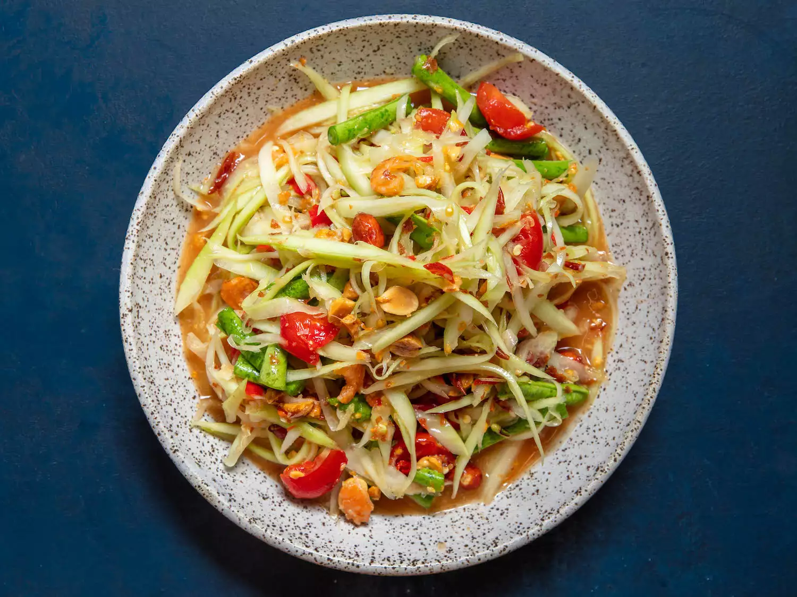

Papaya Salad Recipe
Preparation Time: 1 hour

Ingredients
- 2 small garlic cloves (6g)
- 2 to 3 fresh Thai chiles (2 to 3g total), stemmed (see note)
- 1 tablespoon (8g) dried shrimp (see note)
- 2 tablespoons (30g) roasted unsalted peanuts, divided
-
1 tablespoon plus 2 teaspoons (35g) palm sugar, softened (see note)
- 4 cherry tomatoes (about 2 ounces; 60g), halved
-
2 long beans (about 30g), ends trimmed, cut crosswise into 2-inch pieces
- 3 tablespoons (45ml) fresh lime juice from 2 limes
- 2 tablespoons (30ml) fish sauce
- 2 cups (6 ounces; 170g) shredded papaya
- Cooked Rice
Instructions
-
In a clay or wooden mortar, combine garlic and chiles and pound with
wooden pestle until slightly slightly broken down, making sure to keep
the pestle as close to the chiles as possible to avoid splattering chile
juices over yourself, about 30 seconds. Add dried shrimp and 1
tablespoon (15g) peanuts and continue to pound until slightly broken
down, taking care not to over-pound and form a peanut paste, about 30
seconds.
-
Add palm sugar and continue to pound lightly while also working the
pestle in a circular motion while applying gentle pressure to help
dissolve the palm sugar, about 30 seconds. Add long beans and pound
until slightly broken down, 15 to 30 seconds. Add tomatoes and pound
gently just until the tomatoes release their juices, about 15 seconds.
-
Add lime juice and fish sauce and stir with pestle using a circular
motion until well combined and palm sugar is fully dissolved, about 15
seconds. Add green papaya. Holding a large spoon in your non-dominant
hand while holding the pestle in your dominant hand, pound down the
sides of the mortar (not the center) while simultaneously using the
spoon to move the ingredients back and forth in the mortar until
ingredients are well combined and green papaya has begun to absorb the
dressing, about 30 seconds. Take care not to over-pound the green papaya
or it will lose its crisp texture.
-
Add remaining 1 tablespoon (15g) peanuts and pound gently just until
they are slightly broken down. Transfer salad to a serving plate, and
serve immediately with sticky rice.